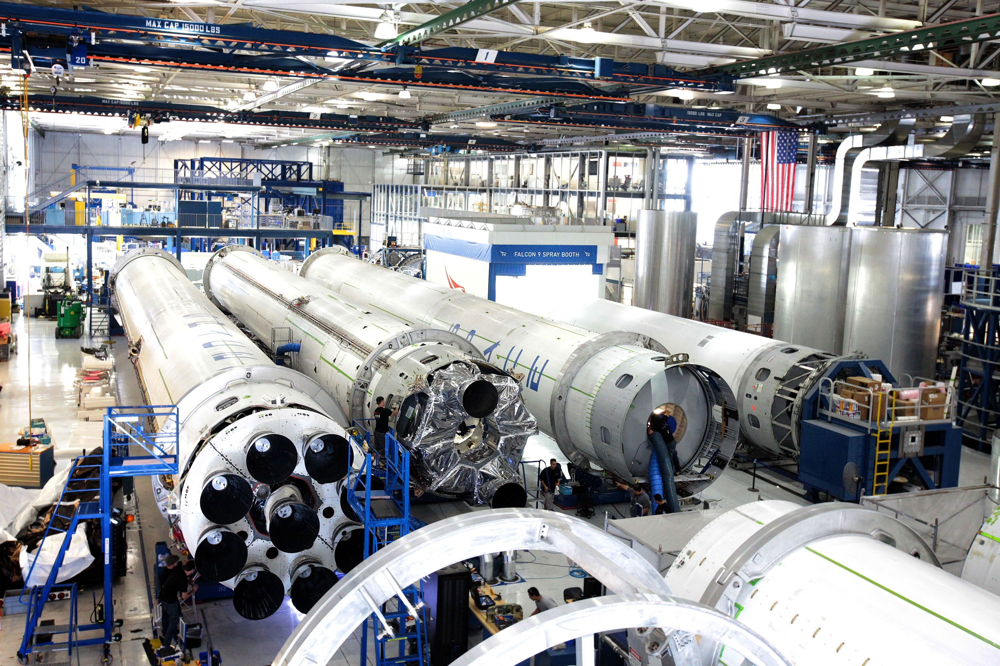
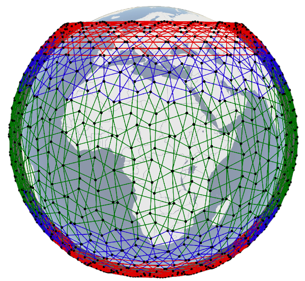

SkyNet is a fictional future, but "SpaceNet" may soon be real. Several companies, including SpaceX, Amazon, and OneWeb, are building constellations with thousands of low-flying satellites to bring high-bandwidth ‘Internet from space’ to the remotest corners of the world. The planned satellites would fly only a few hundred kilometers above us, potentially connecting distant locations like Zürich and Tokyo within 70 milliseconds, compared to 250+ milliseconds today.
|  | |
| Inside a SpaceX factory | Satellites flying at few 100 kilometers above us |
Naturally, these are exciting times for us Computer Networking researchers: while there is great potential in these satellite constellations, they require us to rethink virtually every aspect of networking — today’s networking techniques simply weren’t designed to work for infrastructure that’s zooming around in space at 27,000 km/hour!
|
We have outlined several challenges such networks raise, and investigated one of these in some depth. Specifically, in our recent paper, "Network topology design at 27,000 km/hour", ACM CoNEXT 2019, we proposed a novel way of interconnecting fast-moving satellites to each other, such that they provide more efficient paths between ground locations. Our approach, applied to SpaceX’s proposal, for instance, could improve its efficiency by as much as 2x, thus allowing superior connectivity with fewer satellites. Our core idea is simple, and draws inspiration from visual design: exploit the symmetry of the proposed constellations to connect satellites into repetitive patterns we call “motifs”. While the problem of finding the best inter-satellite connectivity is computationally hard, searching exhaustively through the set of possible motifs is possible, and gives high-quality solutions. A 2-minute explainer about this work is in the video below. |

A multi-motif scheme, where one motif (green) is used near the Equator, and different motifs (in blue and red) are used farther away. |
This work received the Internet Research Task Force’s Applied Networking Research Prize for 2020, and has generated significant news and social media interest. We have only gotten started though; our lab is exploring many of the other hard challenges in this area. As more and more satellite launches take place over the coming months, and these networks start to operate, we stand ready to embrace the opportunities and tackle the challenges.